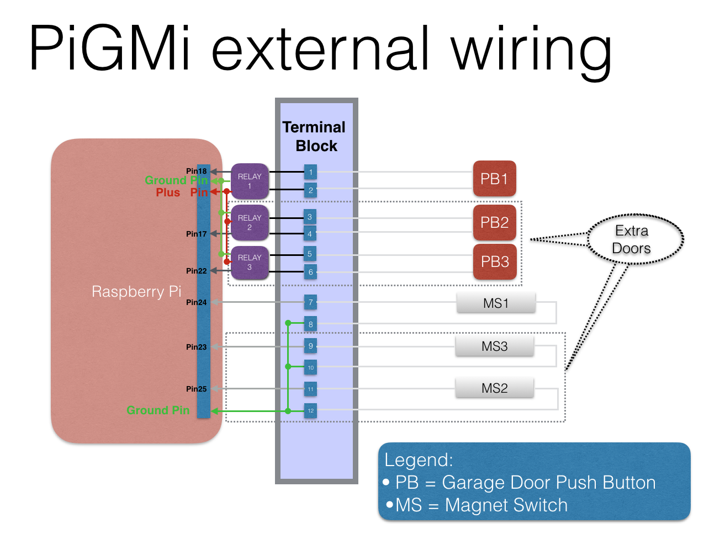

Pi Garage Monitor via Internet (PiGMi)
PiGMi is a web based Garage door monitor/ controller. It allows the opening
and closing of garage door(s) remotely from a web browser on any device. It
has the ability to scale and rotate for mobile devices such as iPhones and
iPads.
Hardware Needed
Refer to the
PiGMi BOM and wiring
for a complete listing of parts needed and prices. Adjust the purchases for
the number of doors you want to control (from 1 to 3).
Hardware Setup
- First, assemble 1 Raspberry Pi, with power-supply, WiFi enabled.
- Verify or Load the required system software:
- Then for each door, wire up the relays, push buttons, and magnetic
switches in the following suggested numbering. (Please note: You don't
need to follow this exactly because you can assign the pins to doors from
the web software).

Credits
Author:
Dave Robinson
(
robboz4@gmail.com)